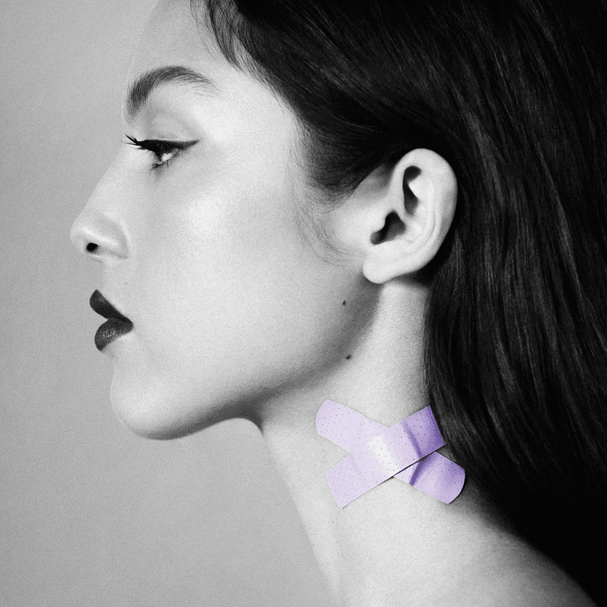
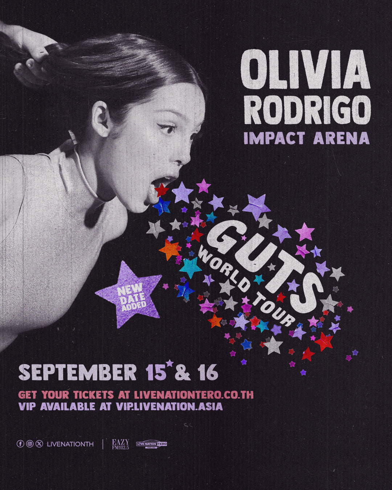

Vampire
Lead single from Olivia Rodrigo's second studio album, Guts, released in June 2023. The track marks a significant musical evolution, blending her signature piano balladry with elements of symphonic rock, disco, and EDM. Produced by Dan Nigro, the song begins with soft, vulnerable keys before erupting into a dramatic climax featuring pounding live drums, electric guitars, and theatrical vocals.
Lyrically, it serves as an angry power ballad about betrayal and regret involving a manipulative older partner who used her for fame. Rodrigo employs the vampire metaphor to describe someone who emotionally drained her, sarcastically asking how he can lie so easily while pretending to care about others. She expresses deep resentment over being exploited due to naivety.
GUTS
Released in September 2023, Olivia Rodrigo's second album Guts proved she could overcome the "sophomore slump." The record shifted her image from a teen heartbreak icon to a mature chronicler of early adulthood and social anxiety. It showcased greater lyrical complexity as she navigated female standardization and self-loathing under intense public scrutiny.
Commercially, the project debuted at number one on the Billboard 200 and earned six Grammy nominations, solidifying her status as a top-tier global artist independent of her Disney origins.

Spilled
Released on March 22, 2024, the deluxe edition GUTS (spilled) expanded Olivia Rodrigo's sophomore album by adding five tracks. It made four vinyl-exclusive songs widely available and introduced one brand new track.
The standout was "Obsessed," released with a surreal music video where Rodrigo crashes an ex's pageant as "Miss Right Now." Co-written with St Vincent, this high-energy pop-rock track humorously details her fixation on her partner's former girlfriend.
Closing the project is "So American," the only completely unreleased addition to the reissue. Releasing these tracks during her massive Guts World Tour gave the live shows fresh material months after the original album earned six Grammy nominations.
- Obsessed
- Scared of My Guitar
- So American
- Girl I've Always Been
- Stranger
Guts World Tour
Olivia Rodrigo's Guts World Tour,
her second concert tour supporting the sophomore album GUTS,
ran from February 2024 to July 2025 across six continents.
This first-ever all-arena trek for
the artist featured a riot grrrl aesthetic
and a setlist blending hits from both GUTS and SOUR.
The production became the highest-grossing tour
by an artist born in the 21st century,
drawing over 1.4 million fans with rotating
opening acts like Chappell Roan and St Vincent.
The live show balanced raw energy
with intimate storytelling across massive arenas.
Rodrigo switched from piano ballads to pop-punk anthems,
often crowd-surfing during encores.
Visuals featuring stark lighting and confetti
matched the album's themes of chaotic adolescence,
earning rave reviews for her authentic arena rock performance.
